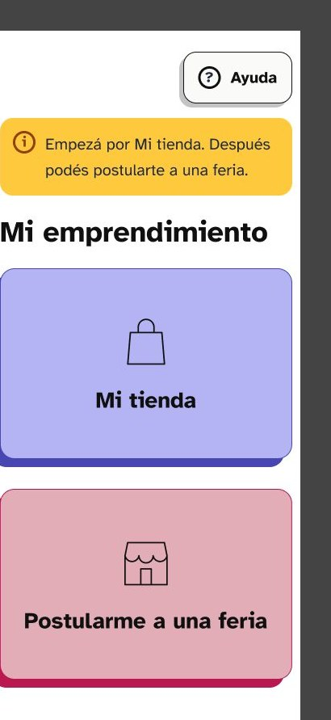
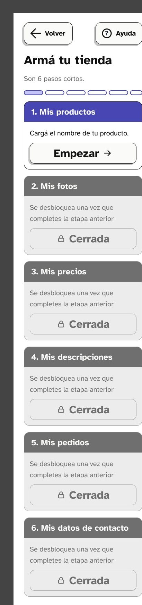
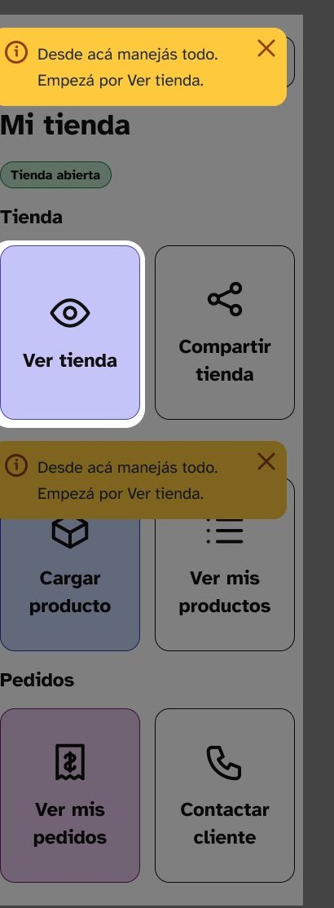
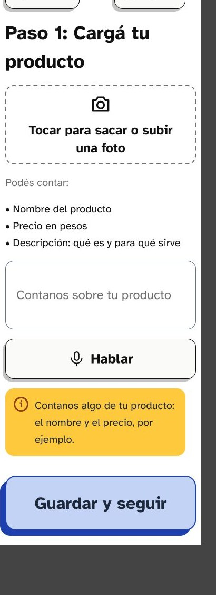

Saltar al contenido
Y·E·DS
Inicio
Hallazgos
Principios
Digital (App)
Analógico (Físico)
Personas
Menú ☰
Inicio
Hallazgos
Principios
Digital (App)
Analógico (Físico)
Personas
Inicio
/
Digital (App)
/
Galería
Galería de pantallas y decisiones
Cada pantalla, con la decisión que la sostiene.

Menú Principal:
Tarjetas grandes por colores para evitar la saturación (
H5
) y facilitar la memoria espacial (
H7
).

Paso a paso:
Un solo foco de acción por pantalla para saber siempre cuál tocar (
C2
).

Ayuda contextual:
Banner no invasivo, sin pop-ups bloqueantes, que indica exactamente qué tocar (
H1
,
C2
).

Carga por voz:
Responder por audio o por texto, partiendo de lo que ya saben hacer (
H9
,
C6
).
← Anterior
Input con voz
Siguiente →
Decisiones de la app